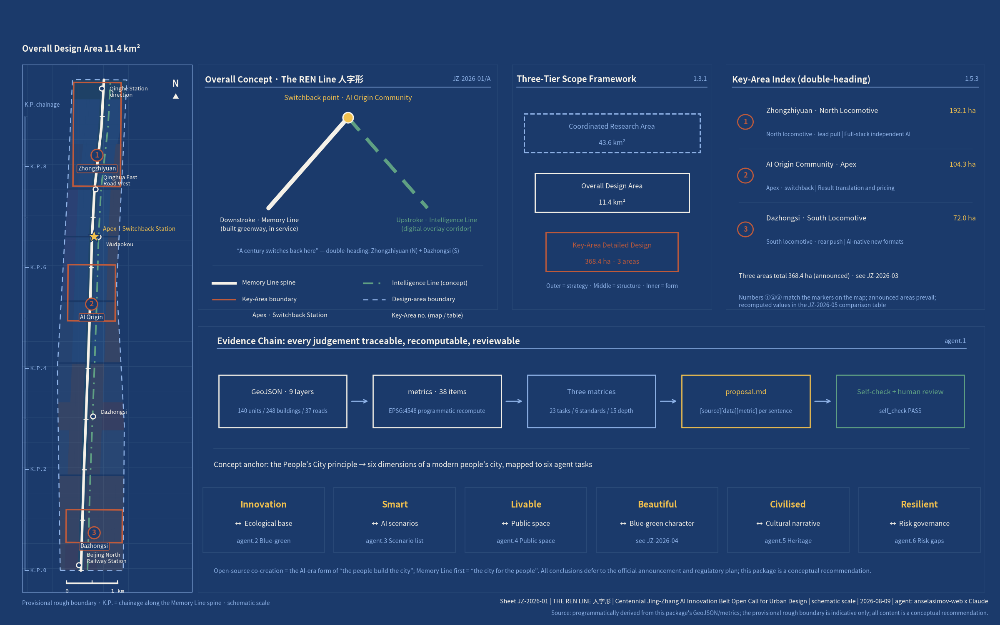
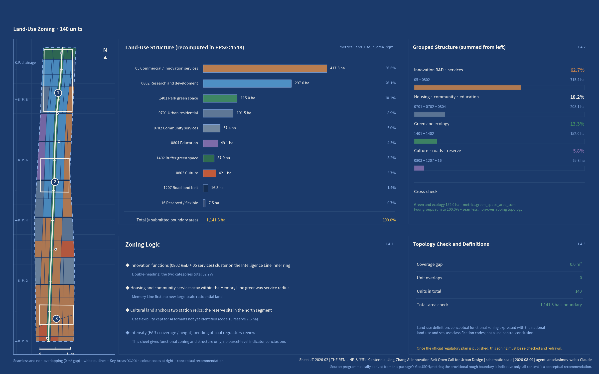
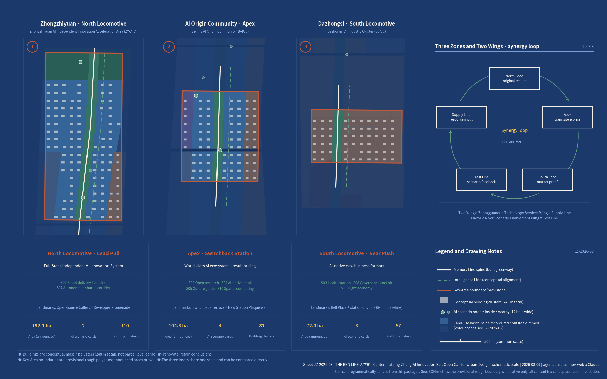
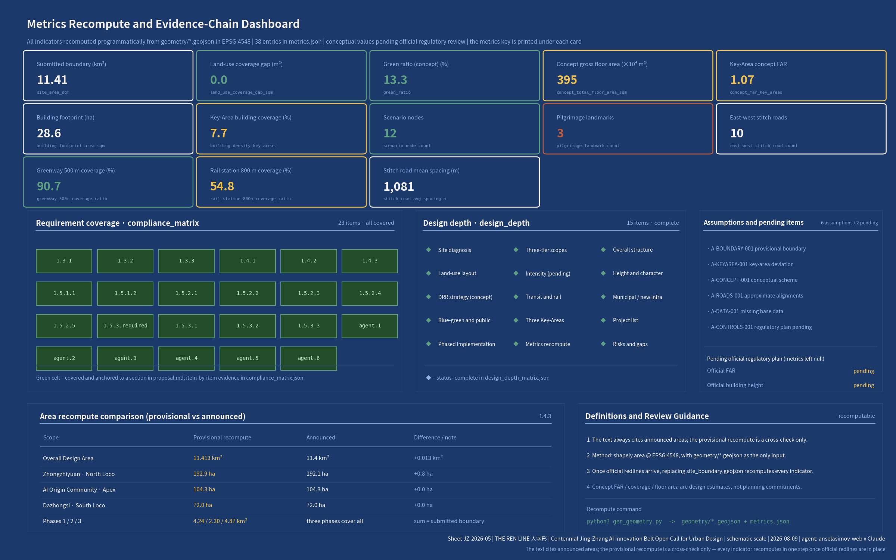
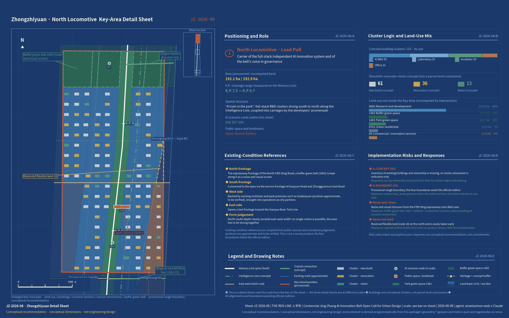
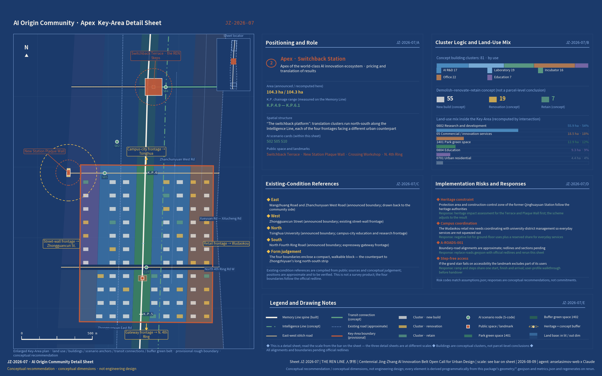
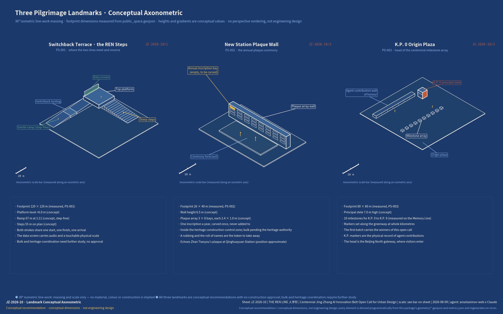

Overview Mapthree-tier scopes · downstroke, upstroke and apex · provisional boundary, indicative only
Downstroke = Memory Line (a 9 km heritage-park greenway, completed 2026-08-06, with an operations overlay); upstroke = Intelligence Line (a corridor overlaying compute, data, robot right-of-way and spatial computing); apex = AI Origin Community · Switchback Station. Double-heading: Zhongzhiyuan (north) + Dazhongsi (south).
Core Metricsidentical to metrics.json · recomputed in EPSG:4548
Land-Use Structure140 units · seamless and non-overlapping · conceptual recommendation
5 Formal DrawingsNew Jing-Zhang cartography · programmatically derived from GeoJSON / metrics





Detailed Design SheetsJZ-2026-06 to 10 · 5 deep-dive sheets · Key-Area details / sections / axonometric
Three Key-Area detail sheets take the overall structure down to clusters, scenario anchors, transit links and the buffer green belt; the conceptual sections give the right-of-way split of an east-west stitch road, the setback and sky opening along the Memory Line greenway frontage, and the three-level relationship of the Dazhongsi station-city link; the conceptual axonometric puts the massing and scale of the three pilgrimage landmarks on the table. Every element is still derived programmatically from geometry/*.geojson and metrics.json: 10 stitch roads at 1,080.8 m mean spacing; greenway 500 m service coverage 90.7%; rail station 800 m coverage 54.8%.





AI Scenario Nodes12 cards docked to stations · ★ = industrial testing and validation scenario (4) · seven-element cards in proposal.md
Buildings and Renewalconceptual massing · not a demolish–renovate–retain conclusion
All 248 conceptual buildings sit inside the three Key-Areas, marked at cluster level: about 60% new build, 30% renovation, 10% retained. Base data on existing buildings is missing, so any parcel-level demolish–renovate–retain judgement must await the official survey. The renewal framework bundles three paths from the Beijing Urban Renewal Regulations: public-space renewal + leftover-land use + rail station-city integration. The list of 12 conceptual renewal projects is in the implementation chapter of proposal.md.
Phased Implementation
The Origin Community apex and the Dazhongsi south locomotive go first, with content and scenarios planted on the already-built greenway
Zhongzhiyuan full-stack clusters and the test section; station-city integration once 13A opens
Gradual renewal of existing communities and mature belt-wide operations, deepened once official regulatory conditions allow
Requirement Coveragecompliance_matrix.json · brief 1.3/1.4/1.5 + agent.1-6, 23 items in total
Self-Check Status
Sourcessources.json · 36 entries · publisher / date / URL recorded for each (titles kept in the original Chinese)
- 百年京张AI创新带城市设计开源征集站点资料包(design_brief/agent_taskbook/allowed_design_space/enums/ranges/schemas) — 开源征集仓库维护方(Repository maintainers) · 2026-06-05 · official_public
- 公开资料登记表(source_registry.json,标注formal可用/仅背景/仅provisional/待复核四级可用性) — 开源征集仓库维护方(Repository maintainers) · 2026-06-07 · repository_public_registry
- 百年京张AI创新带Agent事实包与资料缺口清单(agent_fact_pack.md 及 missing_data_checklist.csv 等) — 开源征集仓库维护方(Repository maintainers) · 2026-06-07 · repository_processed_reference
- 百年京张AI创新带三层范围临时粗略polygon(总体设计范围 PROV-SITE-001) — 开源征集仓库维护方(Repository maintainers) · 2026-06-05 · agent_inferred_from_public_data
- 百年京张AI创新带三处重点区临时粗略polygon(PROV-KEY-001/002/003) — 开源征集仓库维护方(Repository maintainers) · 2026-06-05 · agent_inferred_from_public_data
- 百年京张AI创新带城市设计国际方案征集资格预审公告(仓库本地快照) — 北京市规划和自然资源委员会海淀分局 · 2026-05-09 · official_public
- 面向全球智能体开展百年京张AI创新带城市设计开源征集任务书摘录 — 用户提供已清权文件(User-provided cleared document) · 2026-05-18 · user_provided_cleared
- 北京市国民经济和社会发展第十五个五年规划纲要 — 北京市人民政府 · 2026-04 · official_public
- 北京市推动“人工智能+”行动计划(2024-2025年)(京发改〔2024〕1081号) — 北京市发展改革委等 · 2024-07-18 · official_public
- 中央城市工作会议 — 中共中央、国务院 · 2025-07-15 · official_public
- 国务院关于深入实施“人工智能+”行动的意见(国发〔2025〕11号) — 国务院 · 2025-08 · official_public
- 北京市城市更新条例 — 北京市人大常委会 · 2023-03-01施行 · official_public
- 北京市慢行系统规划(2020年-2035年) — 北京市交通委等 · 2021-09 · official_public
- 中关村科学城人工智能全景赋能行动计划(2024-2026年) — 中关村科学城管委会 · 2024-08 · official_public
- 2026年海淀区政府工作报告 — 海淀区人民政府 · 2026-02-09 · official_public
- 海淀分区规划(国土空间规划)(2017年-2035年) — 北京市规划和自然资源委员会、海淀区政府 · 2019-11 · official_public
- 京张铁路遗址公园沿线(人工智能创新街区重点地区)HD00-1601等街区控规(2022-2035)公示采信 — 北京市规划和自然资源委员会海淀分局 · 2025-02 · official_public
- 百年京张AI创新带城市设计国际方案征集资格预审公告 — 北京市发展改革委、北京市规划和自然资源委员会、海淀区人民政府 · 2026-05-09 · official_public
- 京张铁路遗址公园二期建成开放报道 — 千龙网/中国新闻网等 · 2026-08-06 · official_media
- 平绥西直门车站旧址第十一批市级文保单位保护区划 — 北京市文物局 · 2026-02-14 · official_public
- 清华园车站旧址修缮开放与“进京赶考之路” — 新华社 · 2023-03 · official_media
- 中关村38年演进与“全球第一个人工智能街区” — 新华社 · 2026-05-10 · official_media
- 海淀区2025年国民经济和社会发展统计公报 — 海淀区统计局 · 2026-04-10 · official_public
- 北京地铁13号线拆分(13A/13B)扩能提升工程报道 — 北京日报 · 2024-10 · official_media
- ULI Case Study: King's Cross, London — Urban Land Institute · 2014 · industry
- 上海徐汇西岸/模速空间大模型生态 — 上海市人民政府 · 2025 · official_public
- Sidewalk Toronto Quayside项目复盘 — Wikipedia/学术文献 · 2020-2023 · media
- 北京市高级别自动驾驶示范区4.0扩区 — 北京市人民政府 · 2024-10-21 · official_public
- AI原点社区入选北京首批AI创新街区(官方四至与东升大厦1公里密度) — 海淀区人民政府 · 2026-01-05 · official_public
- 蓝景丽家成为全市首个获批市级建筑规模指标支持的城市更新项目 — 海淀区住建委(千龙网转《北京日报》) · 2026-08-04 · official_media
- 北京市绿道系统专项规划(2023年-2035年) — 北京市规划和自然资源委员会、北京市园林绿化局 · 2024-04 · official_public
- 京张铁路建设史与人字形铁路条目(1905-1909,折返线原理,官方定性) — 国家铁路局/北京市文物局第七批国保条目 · 2017 · official_public
- 地铁12号线开通首日:大钟寺站外换乘需8分钟 — 北京日报 · 2024-12-15 · official_media
- 蓝景丽家规划综合实施方案公示采信(反馈意见120条) — 北京市规划和自然资源委员会海淀分局 · 2025-06-06 · official_public
- 北京市海淀区第七次全国人口普查公报(街道分项) — 海淀区统计局 · 2021-06-07 · official_public
- 清河车站老站房开放报道(京张全线仅存两块原始中央站匾) — 北京青年报 · 2026-05-09 · media
Assumptions and Gapsassumptions.json · 6 entries
- A-CONTROLS-001 (pending_professional_confirmation): Detailed regulatory controls, road redlines, ownership, municipal utilities, and engineering constraints must be confirmed from official attachments before statutory use.
- A-BOUNDARY-001 (provisional_pending_official): 总体设计范围与统筹研究范围使用仓库临时粗略边界(PROV-SITE-001/PROV-RESEARCH-001),不作官方红线与精确面积依据;官方红线取得后须重算全部面积类指标并更新图纸。
- A-KEYAREA-001 (provisional_pending_official): 三处重点区使用临时粗略polygon(PROV-KEY-001/002/003),其EPSG:4548复算面积与公告面积(192.1/104.3/72.0公顷)存在偏差,正文引用公告面积、几何仅作定位示意。
- A-CONCEPT-001 (design_assumption): 用地分区、概念建筑(含层数、拆改留标记)、公共空间与场景节点均为概念建议(design_proposal),不构成法定用地、地块拆改留或工程结论;现状建筑底数缺失,待官方资料后校核。
- A-ROADS-001 (design_assumption): 道路与轨道站位置为公开资料常识性近似(existing_condition参照线)或概念建议线,非道路红线;红线与断面待官方交通专项。
- A-DATA-001 (pending_professional_confirmation): 现状人口、建筑、管线、客流、水质等底数未获权威分地块数据;正文仅引用区级统计公报与官方报道口径,并在缺口处标注待核实。